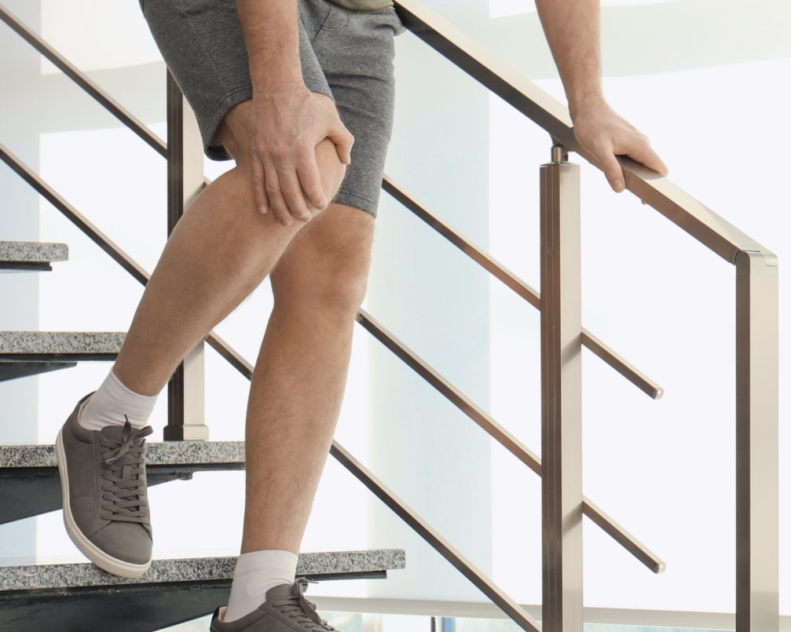
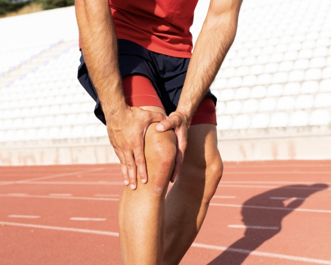
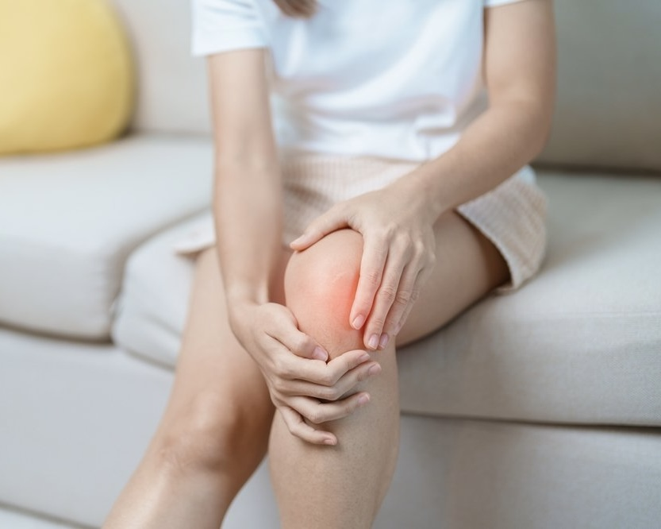
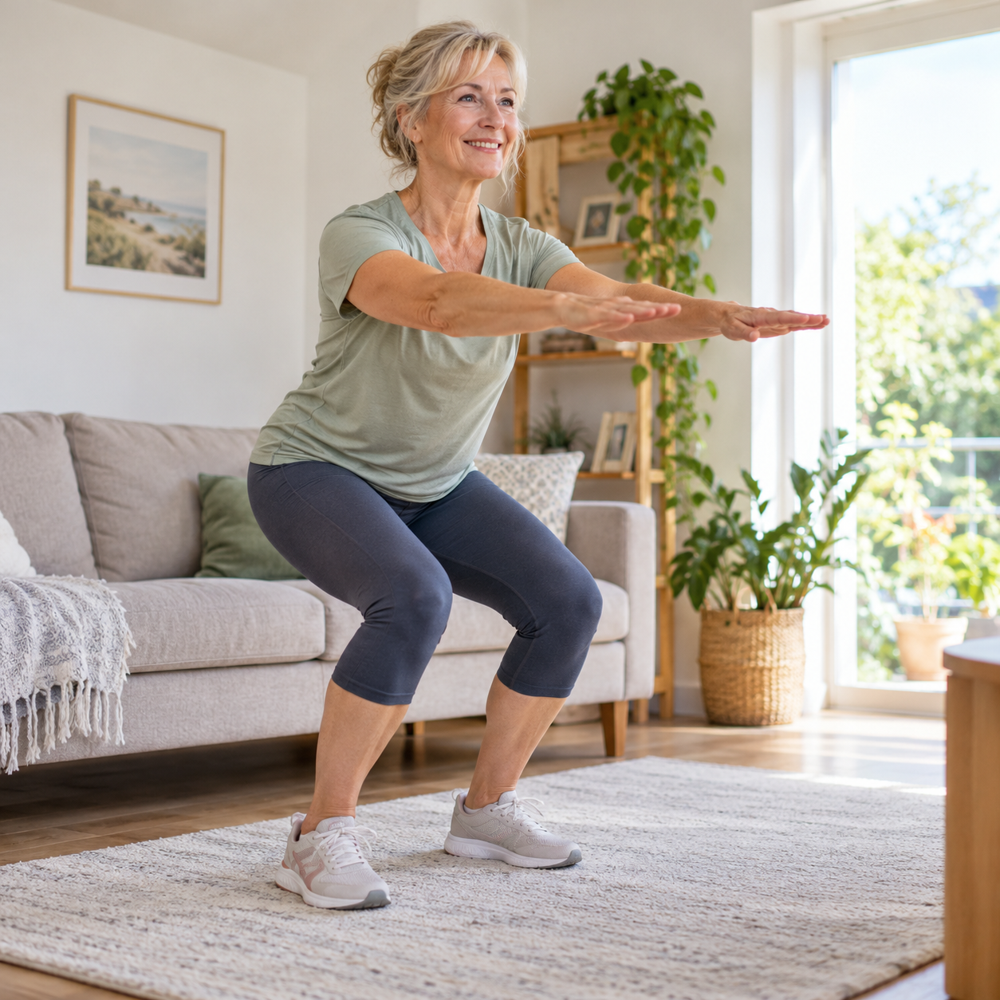
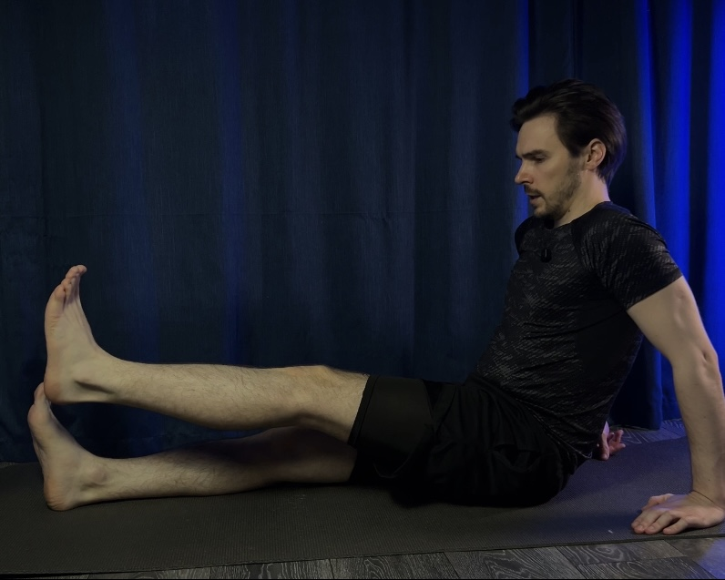
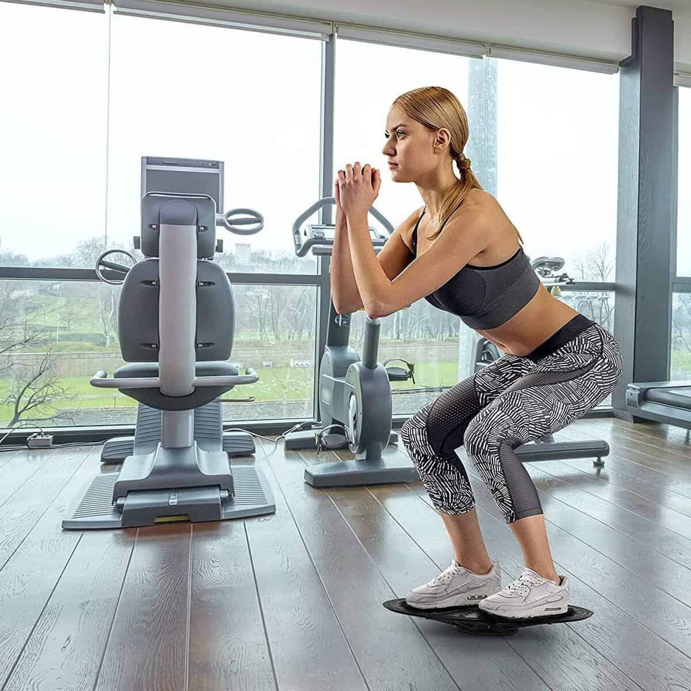
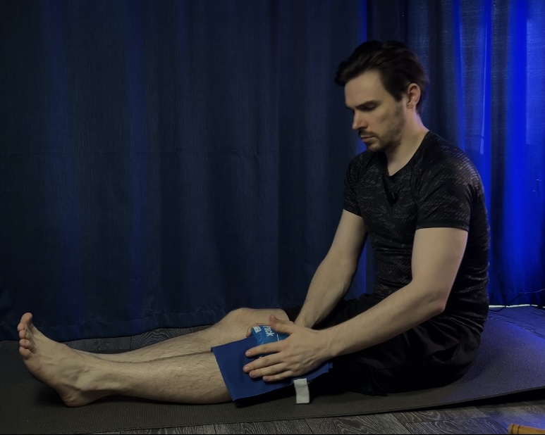
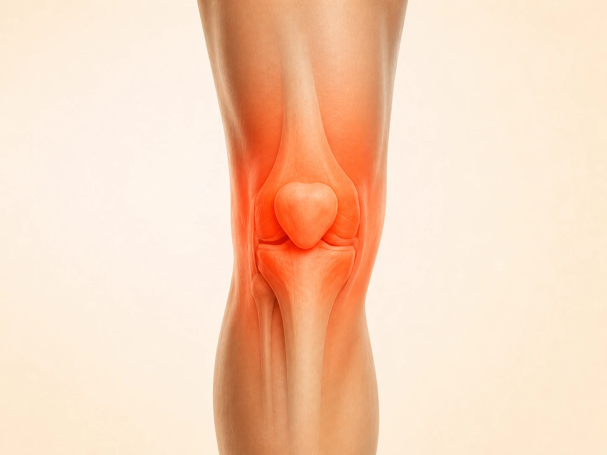
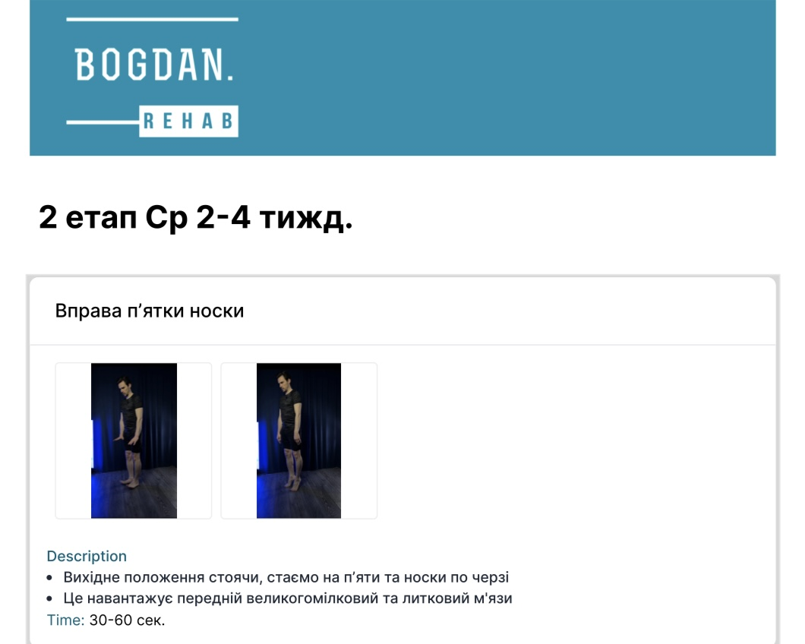

Спуск зі сходів став неприємним
Доводиться триматися за поручень, рухатися обережніше або більше навантажувати іншу ногу.
Авторська програма фізичного терапевта • 10+ років досвіду
Поступово повертайте впевненість у ходьбі, сходах та звичних справах за готовою програмою вправ від фізичного терапевта.
Навіть якщо на знімку вже є артроз, правильно підібрані вправи можуть допомагати зменшувати дискомфорт і покращувати функцію коліна.
Повна програма · Одноразова оплата
Доступ одразу • Telegram • 14 днів гарантії повернення коштів
Не впевнені, чи підійде курс?
Пройти тест із 5 запитаньМожливо, ви впізнаєте себе в одній із цих ситуацій.

Доводиться триматися за поручень, рухатися обережніше або більше навантажувати іншу ногу.

Зранку все може бути добре, але після тривалої ходьби чи активного дня з’являється дискомфорт.

Перші рухи даються важче, а щоб нормально розходитися, потрібен певний час.
На знімку виявили артроз, тому ви стали менше ходити, уникати присідань або фізичної активності.
Ці ситуації не означають, що потрібно повністю відмовлятися від руху. Часто важливо знайти посильний рівень навантаження і поступово підвищувати здатність коліна його переносити.
Мета програми — не просто виконувати вправи, а поступово покращувати здатність коліна переносити повсякденні навантаження.
Працюйте над зменшенням дискомфорту під час звичних рухів.
Поступово розвивайте силу та витривалість для прогулянок і щоденних справ.
Покращуйте контроль руху й силу м’язів, які допомагають під час підйому та спуску.

Навчіться підбирати посильні вправи, оцінювати реакцію коліна та розуміти, коли можна рухатися далі.
Результати індивідуальні та залежать від симптомів, супутніх захворювань і регулярності занять.
Особистий досвід учасників. Результати та строки змін можуть відрізнятися.
Коли коліно болить, природно хотіти його берегти. Але якщо тривалий час майже не навантажувати ногу, м’язи можуть втрачати силу, а звичні справи поступово ставати складнішими.
Мазі, таблетки та інші призначені методи лікування можуть допомагати контролювати біль. Але для покращення сили, витривалості та функції коліна часто потрібна ще й активна реабілітація.
Навіть хороші вправи можуть перестати забезпечувати потрібний розвиток, якщо навантаження не змінюється відповідно до ваших можливостей.
Що спільного в цих ситуаціях?
Саме тому важлива не одна «чарівна» вправа, а зрозуміла система: з чого почати, скільки виконувати та коли переходити до складніших рухів.
За таким принципом побудована моя програма відновлення коліна.
Структура курсу
Не потрібно самостійно складати комплекс чи гадати, які вправи виконувати сьогодні.
Прості вправи допомагають працювати над рухливістю, активацією м’язів та базовою силою. Ви отримуєте готові рекомендації щодо виконання й дозування.
Оцінюєте контроль руху та реакцію коліна на заняття. Якщо критерії ще не виконані, не потрібно поспішати зі складнішими вправами.
Вправи стають складнішими та допомагають готувати коліно до звичних навантажень: ходьби, сходів, присідань та активного дня.
Вам не потрібно вирішувати все самостійно — послідовність і дозування вже підготовлені.
Отримати готовий план відновлення — 590 грнЩо ви отримуєте
Це загальна програма вправ для коліна. У комплекті є окреме відео автора, як проходити курс при артрозі. Відео, тести й додаткові матеріали вже зібрані разом — щоб було зручно займатися та контролювати прогрес.

Наочна техніка виконання, кількість повторень і підходів — усе під рукою під час заняття.

Від базової рухливості та сили — до складніших вправ на баланс, контроль і витривалість.

Перевіряйте реакцію коліна та критерії готовності до наступного етапу.

Зокрема окреме відео автора: як працювати з курсом при артрозі коліна. Також розбори меніска та інших поширених проблем коліна.

Зручні підказки для занять: плани та дозування, до яких можна швидко повернутися.
Усе вже зібрано в Telegram
Після придбання ви отримуєте доступ до програми в Telegram.
Усі заняття, відео та додаткові матеріали зібрані в одному місці.
Починаєте з посильного рівня та виконуєте вправи за відеоінструкціями.
Без необхідності відвідувати зал. Достатньо виділяти від 15 хвилин на заняття.
Тести й критерії допомагають оцінювати готовність до складніших навантажень.
Подивіться, як курс виглядає зсередини — короткий огляд програми.
При артрозі коліна регулярні терапевтичні вправи є одним із базових методів допомоги, які рекомендуються міжнародними клінічними настановами. Вони можуть допомагати зменшувати біль, покращувати силу м’язів і функцію коліна.
Але важливий не просто факт виконання вправ, а їх відповідність можливостям людини та поступова адаптація навантаження.
Саме ці принципи я використав під час створення програми.
Джерело: NICE NG226 — терапевтичні вправи при остеоартрозіНастанова описує принципи допомоги при артрозі, а не оцінює цей конкретний курс.
Особистий досвід учасників. Результати та строки змін можуть відрізнятися.
Важко обрати?
Оберіть симптоми та відомі вам діагнози — за 5 коротких кроків ви отримаєте підказку щодо формату курсу та тематичних бонусів, які можуть бути корисними у вашій ситуації.
В обох варіантах ви отримуєте повну програму. Різниця — у персональних рекомендаціях.
Акційна ціна
14 днів гарантії повернення коштів
Без дзвінків — у зручний для вас час
Можна спробувати без зайвого ризику
Якщо після знайомства з матеріалами ви зрозумієте, що формат вам не підходить, напишіть протягом 14 днів — оплату буде повернено.
Готова програма, зрозуміле дозування, тести й відеопояснення — усе для занять удома у своєму темпі.
Отримати програму за 590 грнДоступ одразу після оплати • 14 днів гарантії повернення коштів.